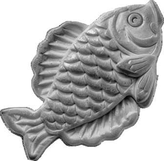
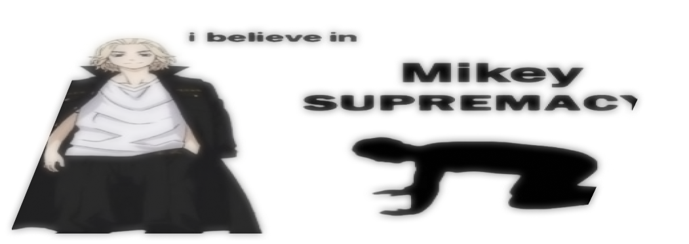

Manjiro Sano
invincible Mikey


invincible Mikey
manjiro sano
Manjiro Sano (佐野さの 万まん次じ郎ろう, Sanō Manjirō?), or Mikey (マイキー, Maikī?), is a founding member and the former leader (総長, Sōchō?) of the Tokyo Manji Gang. In a past timeline, Mikey was the leader of the Kanto Manji Gang. He is the deuteragonist and final antagonist of the Tokyo Revengers manga series and its anime adaptation.
Mikey is a teenager of below-average height with pitch-black piercing eyes and long blonde hair that is only tied at the top with the hair on the sides moving freely.
In the original timeline, adult Mikey's hair was slicked back, and he still had his CB250T motorcycle.
In his second appearance as an adult, Mikey appears with short black hair and a dragon tattoo on his neck similar to the ones Draken and Takashi Mitsuya have. He rides a CB205T owned previously by his brother, Shinichiro Sano.
In the latest present timeline, he has short white hair with a middle part undercut hairstyle and a Bonten tattoo on his nape with a design similar to his adoptive brother's, Izana Kurokawa's, earrings. He is noted to be thinner, deranged, and with heavy bags under his eyes.
In the final time leap, he has a short black hair which is parted at the middle. He is seen wearing a dark blue suit and a racing helmet and suit seen in a visualization of Mikey racing.
Mikey is usually a carefree teenager who loves to joke and play pranks around those he considers his close friends. He cares for them greatly and is determined to protect their honor. He rarely shows any sign of weakness, as he believes himself to be the foundation and support for Toman, and if the pillar himself were to display weakness, Toman would also be weakened.
As Toman's leader, his aura changes dramatically, becoming imposing and commanding. While Toman's members respect Mikey, they also hold a degree of fear towards him and his immense prowess.
manjiro sano
Manjiro has a second personality called Black Impulse. What happens when his second personality takes control of his body?
When Mikey enters the Black Impulse, his stats increase manifold.
When Mikey taps into the Black Impulse, he becomes impervious to physical damage inflicted by his adversaries. This capability was vividly showcased during his showdown with Saus, where despite the exchange of blows, Mikey remained unfazed by the onslaught, turning the tide of a battle where his opponent had previously held complete dominance over Doraken.
"When Mikey harnesses the power of the Black Impulse, he gains immunity to physical damage from his adversaries. This ability was aptly showcased during his intense encounter with Saus. Despite engaging in a fierce exchange of blows, Mikey emerged unscathed, defying the damage inflicted by his opponent who had previously dominated Doraken."
"When Mikey activates the Black Impulse, all his positive emotions are effectively overridden, leaving him consumed by indifference, a craving for blood, and ruthless composure. In this state, he shows no restraint even towards those close to him, as evidenced by his actions, such as those against Takemichi."
"When Mike enters the Black Impulse, he emits an aura of a bloodthirsty killer, capable of intimidating even formidable characters. This was vividly demonstrated, for instance, with Senju. When Mike was fully consumed by darkness, the girl felt his indescribable thirst for blood and experienced fear, even though she had previously been prepared to continue fighting Terano."
of manjiro sano
"Toman belongs to me. As long as I’ve its back, none of us are gonna lose."
"I know there’s nothing we can do. But my heart can’t accept it."
"He’d never be that dishonest cause he promised me that we’d own the whole country together."
"If all you can do is destroying what’s precious to me… then I will destroy you."
"The most important thing is not to win a fight, but to not let yourself be defeated."
manjiro sano
Shinichiro Sano (older brother)
Emma Sano (younger half-sister)
Makoto Sano (father)†
Sakurako Sano (mother)†
Mansaku Sano (paternal grandfather)